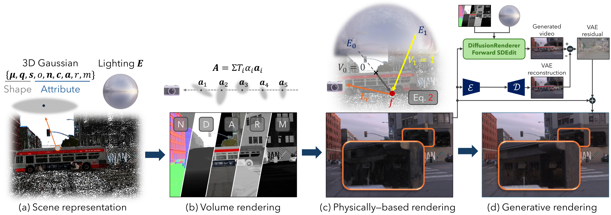
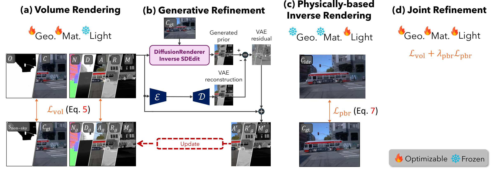

Inverse rendering of urban scenes from captured videos enables numerous applications, including content creation and autonomous driving simulation. Physically-based rendering methods follow and control lighting physics, but suffer from reconstruction and rendering artifacts. While generative models produce realistic videos, they offer limited consistency and controllability. We present BRDFusion, a unified framework that combines two complementary models for inverse and forward rendering. Specifically, BRDFusion recovers explicit, consistent scene properties with physical modeling and alleviates optimization ambiguity with generative priors. During forward rendering, the physical model provides controllable rendering from the scene configuration, and the generative model denoises and fixes artifacts. Therefore, our method produces high-quality videos while allowing precise control, outperforming baselines in real and synthetic scenes. Moreover, BRDFusion supports novel-view relighting, night simulation, and dynamic object insertion/editing.


This research was funded by the National Science and Technology Council, Taiwan, under Grants NSTC 112-2222-E-A49-004-MY2 and 113-2628-E-A49-023-. The authors are grateful to Google, NVIDIA, and MediaTek Inc. for their generous donations. Yu-Lun Liu acknowledges the Yushan Young Fellow Program by the MOE in Taiwan.
@misc{liu2026brdfusionphysicsmeetsgeneration,
title={BRDFusion: Physics Meets Generation for Urban Scene Inverse Rendering},
author={Yi-Ruei Liu and Jie-Ying Lee and Zheng-Hui Huang and Yu-Lun Liu and Chih-Hao Lin},
year={2026},
eprint={2606.17049},
archivePrefix={arXiv},
primaryClass={cs.CV},
url={https://arxiv.org/abs/2606.17049},
}